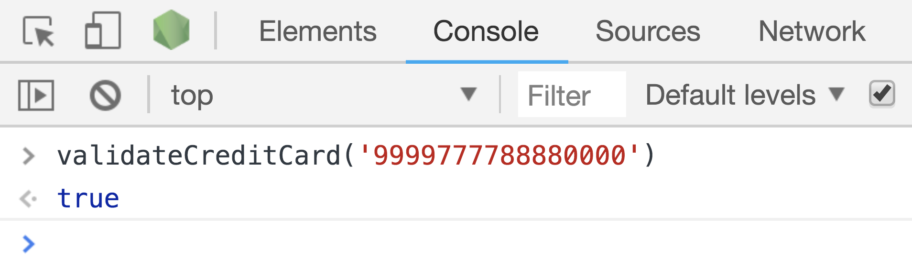

You're starting your own credit card business. You've come up with a new way to validate credit cards with a simple function called validateCreditCard that returns true or false.
Here are the rules for a valid number:
The following credit card numbers are valid:
9999-9999-8888-0000
6666-6666-6666-1666
The following credit card numbers are invalid:
a923-3211-9c01-1112 //invalid characters
4444-4444-4444-4444 //only one type of number
1211-1111-1111-1112 //sum less than 16
6666-6666-6666-6661 //odd final number
In order to run the function, you'll need to load javascript on an HTML page. From there, you will open your developer console to call the function.
Bonus: Return an object indicating whether the credit card is valid, and if not, what the error is
{ valid: true, number: 192887668901 }
{ valid: false, number: 19288766890, error: ‘wrong_length’ }
Double Bonus: Make your credit card scheme even more advanced! What are the rules, and what are some numbers that pass or fail? Ideas: check expiration date! Check out the Luhn Algorithm for inspiration.